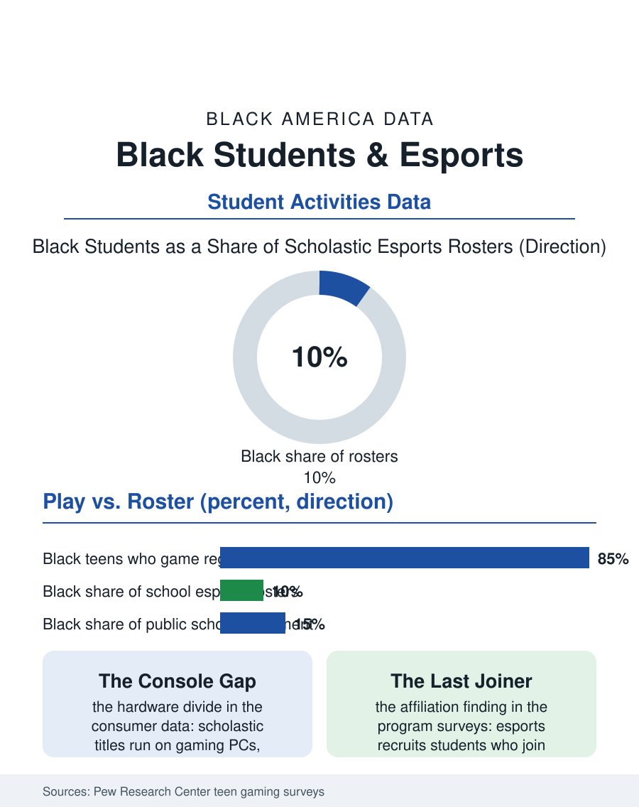

Black Education
The New Arena: Black Students and Esports
Black teenagers game at high rates and hold a small share of school esports rosters, a new activity distributing opportunity along the oldest map. The esports file.

The newest arena in school activities runs on a screen. Scholastic esports, organized competitive video gaming with coaches, seasons, and state championships, has spread through American schools in less than a decade, and the participation data are forming in real time. Black students are avid gamers and underrepresented on school esports rosters relative to that avidness, a gap that recapitulates, in digital form, the access geometry of every activity file in this atlas. This article reads the esports file.
Play at Home, Absence at School
The consumer surveys establish the base rate: video gaming is nearly universal among American teenagers, and Black teens game at rates equal to or above the average, on consoles and phones especially. The school programs, run through state associations and national platforms, tell the roster story: esports participants nationwide skew white and Asian and heavily male, with Black students present at shares below their enrollment in most reporting states. The mechanisms are the file's familiar ones wearing new peripherals. Programs live where fees, facilities, and faculty sponsors live; the gaming lab with its PCs and headsets is a capital purchase, and schools serving Black students fund it last. The console-versus-PC divide draws a class line inside gaming itself: competitive scholastic titles run on gaming PCs, while Black teen gaming concentrates on consoles and mobile, so the practiced student arrives fluent in a different hardware dialect than the tryout speaks. Eligibility rules import the standard filters, grade requirements and fees, and the sponsor pipeline depends on a teacher who games, a distribution as uneven as any in the activities budget.
The Defense of the Arena
Esports' advocates in the education literature make an argument the traditional activities files recognize: affiliation. School esports programs report, in the association surveys and the early academic studies, recruiting students who participate in nothing else, the disengaged teenager whose entire school attachment becomes the team, and the attendance and grade associations that follow mirror the extracurricular findings for sports and band. The college layer is more concrete than skeptics expected: hundreds of colleges now field varsity esports with scholarships, and the pipeline of titles, broadcasting, game design, and event production feeds a real industry, one whose workforce demographics, in the technology file of this atlas, are notably thin on Black professionals at the design and executive levels. For Black students the esports proposition is doubled: the rare arena where their out-of-school expertise is genuinely deep, and the rare STEM-adjacent pipeline whose entry does not presume a childhood of enrichment purchases. The counterweight in the record is governance: screen-time debates, the commercial platforms' role inside public schools, and title content rules all legitimately contested, and the programs that thrive academically are the ones with the coach-as-teacher model, study halls, and eligibility enforced like any sport.
What the Roster Decides
The file is young, and its ending is genuinely unwritten, which makes the current distribution consequential: norms set now, which schools build labs, which platforms set fee structures, which colleges scout which tournaments, will harden into the activity's permanent access map. The state associations publishing participation data by race are performing the service this atlas values most, making the gap visible while it is still cheap to close: fee waivers, console-league divisions that meet students on their own hardware, and equipment grants targeted the way the band-instrument banks are targeted in the music file. The deeper play recorded in the industry data is the creator layer beyond competition: streaming, commentary, video production, and community management, where Black creators have built outsized audiences independent of any institution, suggesting the school's role may matter most as the place that converts play into portfolio, the stream into the media-production credit, the tournament into the scholarship file. The esports file closes on the observation its data make quietly: every generation adds one activity through which teenagers prove themselves, and each one, chess, band, debate, robotics, and now this, initially distributes its school-based opportunity along the same map as all the others, until someone reads the roster numbers early enough to object. The rosters are being published now.
The gender line inside the file deserves its own record before the roster question settles. Girls of every background are scarce in scholastic esports relative to their gaming, and Black girls face the compound version of both the access map and the arena's culture. The programs reporting the strongest female participation share a design: girls' divisions or teams in the first season, women coaches visibly in charge, and school cultures that treat the lab as belonging to its whole roster. The associations tracking the numbers have begun publishing them by gender and race together, and the intersectional column is, as everywhere in this atlas, where the real distribution is hiding.
More in Black Education
Black Educational Attainment: High School Parity, the College Gap
About 89 percent of Black adults hold a high school diploma and one in four holds a bachelor's degree or higher — the attainment ladder, the college completion gap, and the generational trend.
Historically Black Colleges and Universities: Enrollment and Degrees
More than 100 HBCUs enroll roughly 290,000 students and award about one in six Black bachelor's degrees — an outsized share from a small sector. The federal education data.
Black College Enrollment: 2.4 Million Students
About 2.4 million Black students are enrolled in American colleges — nearly two-thirds of them women. The NCES enrollment data by sector, level, and trend.
Source: Pew Research Center surveys of teen gaming; state esports association participation reports; National Association of Collegiate Esports data.